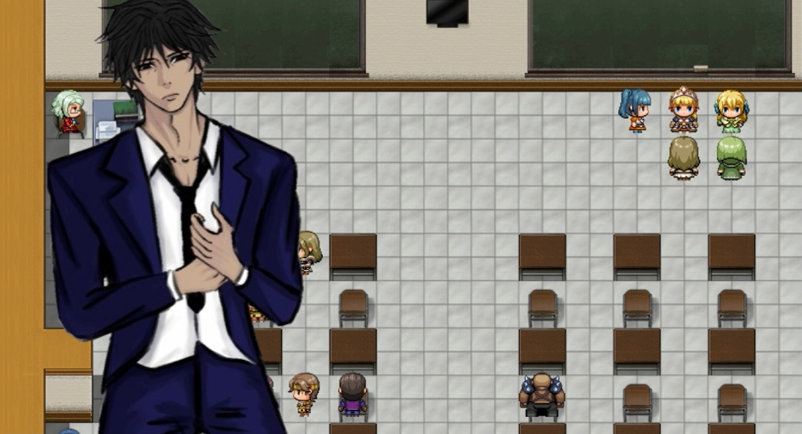
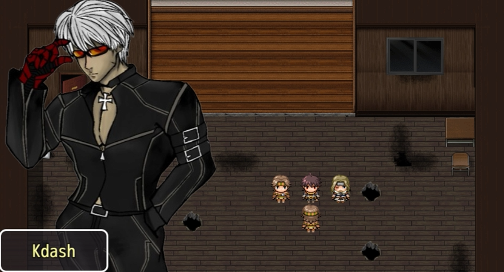
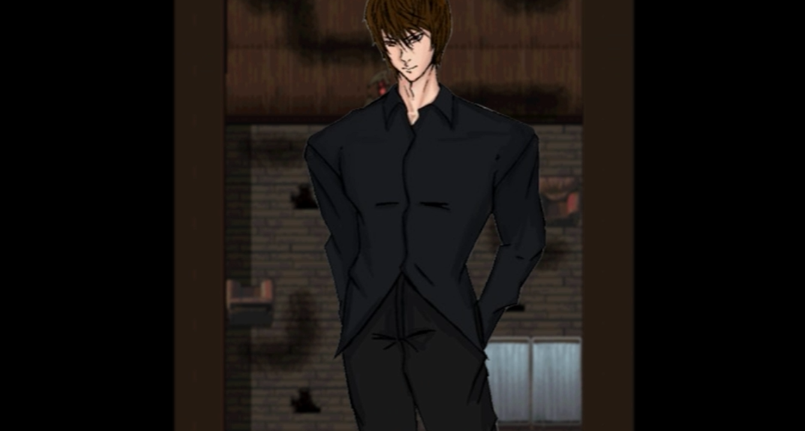

Alter Ego
Genre: Psychological Narrative RPG / Simulation
Premise: High school life is crushing, so you build a new one online. Follow a high school student spiraling through severe depression who finds solace in a virtual reality game. As the digital world becomes safer and more vibrant than his painful reality, the boundary between the two dissolves, forcing a desperate struggle between confronting real-life pain and surrendering to a virtual paradise.
What You Actually Do:
Balance Two Worlds: Alternate between navigating drab, emotionally heavy daily life in a retro RPG Maker style and diving into an immersive, escapist VR world.
Manage Mental & Digital State: Balance your character’s emotional stamina, social isolation, and virtual immersion level.
Explore Narrative Branching: Make pivotal dialogue and lifestyle choices that determine whether you reach out for help, sink deeper into delusion, or find a way to reconcile reality and escape.
What Makes It Worth Playing:
A raw, deeply relatable exploration of mental health and modern escapism that doesn't pull its punches. Its dual-world mechanics make the emotional weight tangible, turning a personal story into an unforgettable psychological journey.
Screenshots


